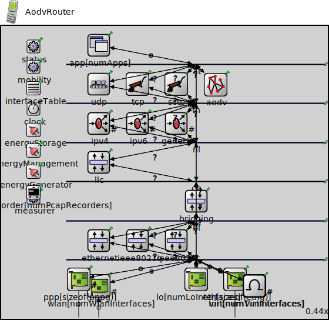

Package: inet.node.aodv
AodvRouter
compound moduleIt models a ~WirelessHost extended with ~Aodv submodule.
AODV is an on-demand MANET routing protocol. Each node works similar to a 'router': they manage their own routing tables, send request for routes and consult the IP layer via Netfilter hooks for data forwarding.
Scenerios where AODV routing is desired use this module as a host module.
The AODV v.2 (known as Dymo) is also implemented: ~Dymo, ~DymoRouter.
<b>See also:</b> ~Aodv, ~Dymo, ~DymoRouter.
Usage diagram
The following diagram shows usage relationships between types. Unresolved types are missing from the diagram.
Inheritance diagram
The following diagram shows inheritance relationships for this type. Unresolved types are missing from the diagram.
Used in
| Name | Type | Description |
|---|---|---|
| AODVNetwork | network | (no description) |
| ConfiguratorD | network | (no description) |
| DataLinkVisualizerMobileShowcase | network | (no description) |
| FilteringExampleNetwork | network | (no description) |
| NeighborCacheTest | network | (no description) |
| NetworkPathMobileShowcase | network | (no description) |
| RoutingTableVisualizationDynamicShowcase | network | (no description) |
| ShortestPath | network | (no description) |
| SimpleRREQ | network | (no description) |
| SimpleRREQ2 | network | (no description) |
Extends
| Name | Type | Description |
|---|---|---|
| AdhocHost | compound module |
A wireless host containing routing, mobility and energy components. Supports IPv4 network protocol, TCP, UDP, and SCTP as transport protocol. This is a typical mobile node which can participate in adhoc routing and may have TCP/UDP applications installed. Supports ICMP (ping) too. |
Parameters
| Name | Type | Default value | Description |
|---|---|---|---|
| hasStatus | bool | false | |
| osgModel | string | "" |
3D model for OSG visualization, no 3D model by default |
| osgModelColor | string | "" |
tint color, no colorization by default |
| canvasImage | string | "" |
image for canvas visualization, no image by default |
| canvasImageColor | string | "" |
tint color, no colorization by default |
| recordPcap | bool | false | |
| numPcapRecorders | int | recordPcap ? 1 : 0 | |
| numLoInterfaces | int | 1 | |
| numWlanInterfaces | int | 1 | |
| numEthInterfaces | int | 0 |
minimum number of ethernet interfaces |
| numPppInterfaces | int | 0 |
minimum number of PPP interfaces |
| numTunInterfaces | int | 0 | |
| numVirtInterfaces | int | 0 | |
| fcsMode | string | "declared" | |
| hasIpv4 | bool | true | |
| hasIpv6 | bool | false | |
| hasGn | bool | false | |
| forwarding | bool | true | |
| multicastForwarding | bool | false | |
| hasUdp | bool | firstAvailableOrEmpty("Udp") != "" | |
| hasTcp | bool | firstAvailableOrEmpty("Tcp", "TcpLwip", "TcpNsc") != "" | |
| hasSctp | bool | false | |
| numApps | int | 0 |
Properties
| Name | Value | Description |
|---|---|---|
| networkNode | ||
| labels | node | |
| class | NodeBase | |
| display | i=device/cellphone |
Gates
| Name | Direction | Size | Description |
|---|---|---|---|
| radioIn [ ] | input | numWlanInterfaces | |
| pppg [ ] | inout | numPppInterfaces | |
| ethg [ ] | inout | numEthInterfaces |
Unassigned submodule parameters
| Name | Type | Default value | Description |
|---|---|---|---|
| status.initialStatus | string | "UP" |
TODO @signal, @statistic |
| pcapRecorder.verbose | bool | true |
whether to log packets on the module output |
| pcapRecorder.pcapFile | string | "" |
the PCAP file to be written |
| pcapRecorder.fileFormat | string | "pcapng" | |
| pcapRecorder.snaplen | int | 65535 |
maximum number of bytes to record per packet |
| pcapRecorder.dumpBadFrames | bool | true |
enable dump of frames with hasBitError |
| pcapRecorder.moduleNamePatterns | string | "wlan[*] eth[*] ppp[*]" |
space-separated list of sibling module names to listen on |
| pcapRecorder.sendingSignalNames | string | "packetSentToLower" |
space-separated list of outbound packet signals to subscribe to |
| pcapRecorder.receivingSignalNames | string | "packetReceivedFromLower" |
space-separated list of inbound packet signals to subscribe to |
| pcapRecorder.dumpProtocols | string | "ethernetmac ppp ieee80211mac" |
space-separated list of protocol names as defined in the Protocol class |
| pcapRecorder.packetFilter | object | "*" |
which packets are considered, matches all packets by default |
| pcapRecorder.helpers | string | "" |
usable PcapRecorder::IHelper helpers for accept packettype and store/convert packet as specified linktype currently available: "inet::AckingMacToEthernetPcapRecorderHelper" |
| pcapRecorder.alwaysFlush | bool | false |
flush the pcapFile after each write to ensure that all packets are captured in case of a crash |
| pcapRecorder.displayStringTextFormat | string | "rec: %n pks" | |
| interfaceTable.displayAddresses | bool | false |
whether to display IP addresses on links |
| cb.displayStringTextFormat | string | "processed %p pk (%l)" |
determines the text that is written on top of the submodule |
| cb.forwardServiceRegistration | bool | true | |
| cb.forwardProtocolRegistration | bool | true | |
| bl.displayStringTextFormat | string | "processed %p pk (%l)" |
determines the text that is written on top of the submodule |
| bl.forwardServiceRegistration | bool | true | |
| bl.forwardProtocolRegistration | bool | true | |
| li.displayStringTextFormat | string | "processed %p pk (%l)" |
determines the text that is written on top of the submodule |
| li.forwardServiceRegistration | bool | true | |
| li.forwardProtocolRegistration | bool | true | |
| eth.bitrate | double | ||
| nl.displayStringTextFormat | string | "processed %p pk (%l)" |
determines the text that is written on top of the submodule |
| nl.forwardServiceRegistration | bool | true | |
| nl.forwardProtocolRegistration | bool | true | |
| tn.displayStringTextFormat | string | "processed %p pk (%l)" |
determines the text that is written on top of the submodule |
| tn.forwardServiceRegistration | bool | true | |
| tn.forwardProtocolRegistration | bool | true | |
| at.displayStringTextFormat | string | "processed %p pk (%l)" |
determines the text that is written on top of the submodule |
| at.forwardServiceRegistration | bool | true | |
| at.forwardProtocolRegistration | bool | true | |
| aodv.routingTableModule | string | "^.ipv4.routingTable" | |
| aodv.interfaceTableModule | string | "^.interfaceTable" | |
| aodv.networkProtocolModule | string | "^.ipv4.ip" | |
| aodv.askGratuitousRREP | bool | false |
see RFC 3561: 6.6.3 |
| aodv.useHelloMessages | bool | false |
see RFC 3561: 6.9 |
| aodv.useLocalRepair | bool | false |
see RFC 3561: 6.12 *not implemented yet* |
| aodv.destinationOnlyFlag | bool | false |
see RFC 3561: 5.1 |
| aodv.udpPort | int | 654 | |
| aodv.interface | string | "wlan0" | |
| aodv.maxPeriodicJitter | double | helloInterval / 4 |
it MUST NOT be negative; it MUST NOT be greater than MESSAGE_INTERVAL/2; it SHOULD NOT be greater than MESSAGE_INTERVAL/4. |
| aodv.periodicJitter | double | uniform(0s, maxPeriodicJitter) |
jitter for externally triggered message generation and message forwarding |
| aodv.maxJitter | double | 5ms |
RFC 5148: need more revise: As well as the decision as to whether to use jitter being dependent on the medium access control and lower layers, the selection of the MAXJITTER parameter SHOULD be appropriate to those mechanisms. |
| aodv.jitter | double | uniform(0ms, maxJitter) |
jitter for broadcasts |
| aodv.helloInterval | double | 1s |
every helloInterval seconds a node broadcasts Hello messages (if it is necessary) |
| aodv.allowedHelloLoss | int | 2 |
allowedHelloLoss * helloInterval is the lifetime value for Hello messages |
| aodv.activeRouteTimeout | double | 3s |
the timeout value for cached routes If Hello messages are used, then the ACTIVE_ROUTE_TIMEOUT parameter value MUST be more than the value (ALLOWED_HELLO_LOSS * HELLO_INTERVAL). |
| aodv.netDiameter | int | 35 |
the maximum possible number of hops between two nodes in the network |
| aodv.nodeTraversalTime | double | 0.04s |
an estimation of the average one-hop traversal time |
| aodv.rerrRatelimit | int | 10 |
maximum number of RERR messages that the AODV may originate in 1s. |
| aodv.rreqRetries | int | 2 |
specifies the number of times AODV will repeat an expanded ring search for a destination |
| aodv.rreqRatelimit | int | 10 |
maximum number of RREQ messages that the AODV may originate in 1s. |
| aodv.timeoutBuffer | int | 2 |
plus time to wait for a delayed RREP (due to congestion) (to omit this buffer set it to 0) |
| aodv.ttlStart | int | 2 |
specifies the TTL value when initiating a route request |
| aodv.ttlIncrement | int | 2 |
specifies the value by which the TTL will be incremented each time a RREQ is retransmitted |
| aodv.ttlThreshold | int | 7 |
the maximum value of TTL over which NET_DIAMETER value will be used to broadcast any RREQ |
| aodv.localAddTTL | int | 2 |
it is used by the formula which calculates the initial TTL of the RREQ for a local repair |
| aodv.myRouteTimeout | double | 2 * activeRouteTimeout |
the value of the lifetime field that a destination node places in RREPs |
| aodv.deletePeriod | double | 5 * max(activeRouteTimeout, helloInterval) |
the time after which an expired route is deleted |
| aodv.blacklistTimeout | double | rreqRetries * netTraversalTime |
the time after which a blacklisted node is removed from the blacklist |
| aodv.netTraversalTime | double | 2 * nodeTraversalTime * netDiameter |
an estimation of the traversal time for the complete network |
| aodv.nextHopWait | double | nodeTraversalTime + 0.01s |
timeout for a RREP-ACK |
| aodv.pathDiscoveryTime | double | 2 * netTraversalTime |
buffer timeout for each broadcasted RREQ message |
Source code
// // It models a ~WirelessHost extended with ~Aodv submodule. // // AODV is an on-demand MANET routing protocol. Each node // works similar to a 'router': they manage their own routing // tables, send request for routes and consult the IP layer via // Netfilter hooks for data forwarding. // // Scenerios where AODV routing is desired use this module as a // host module. // // The AODV v.2 (known as Dymo) is also implemented: ~Dymo, // ~DymoRouter. // // @see ~Aodv, ~Dymo, ~DymoRouter. // module AodvRouter extends AdhocHost { submodules: aodv: Aodv { @display("p=825,226"); } connections: aodv.socketOut --> at.in++; aodv.socketIn <-- at.out++; }File: src/inet/node/aodv/AodvRouter.ned
 This documentation is released under the Creative Commons license
This documentation is released under the Creative Commons license